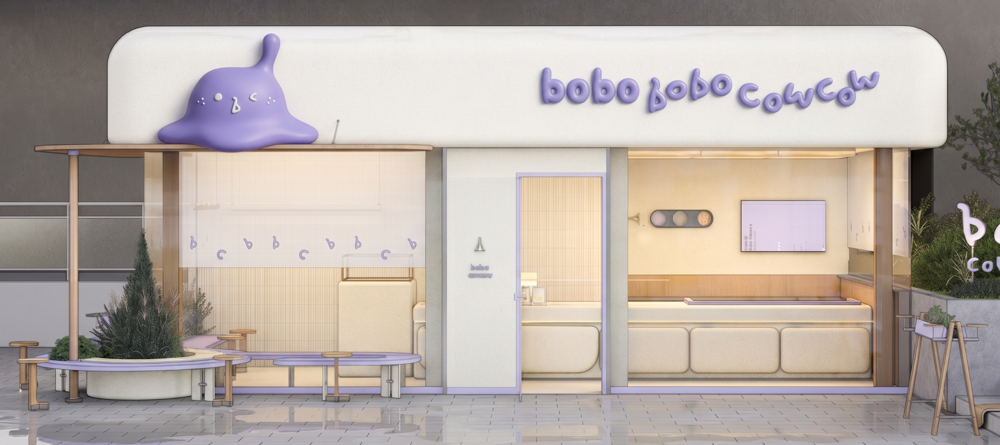
BOBO&COWCOW
BOBO&COWCOW is a collaborative brand between Xiaodou Haitang and COWCOW, focusing on the healthy light snack sector. We strictly select seasonal, native ingredients without any redundant additives. By precisely calculating and strictly controlling the calories of each product, we allow the younger generation to put aside dietary anxiety and comfortably enjoy delicious food, perfectly balancing their appetite with a healthy, light lifestyle.
Client
小豆海棠 & COWCOW
Year
2026
Services
- Brand Identity
- Art Direction
- Visual Design
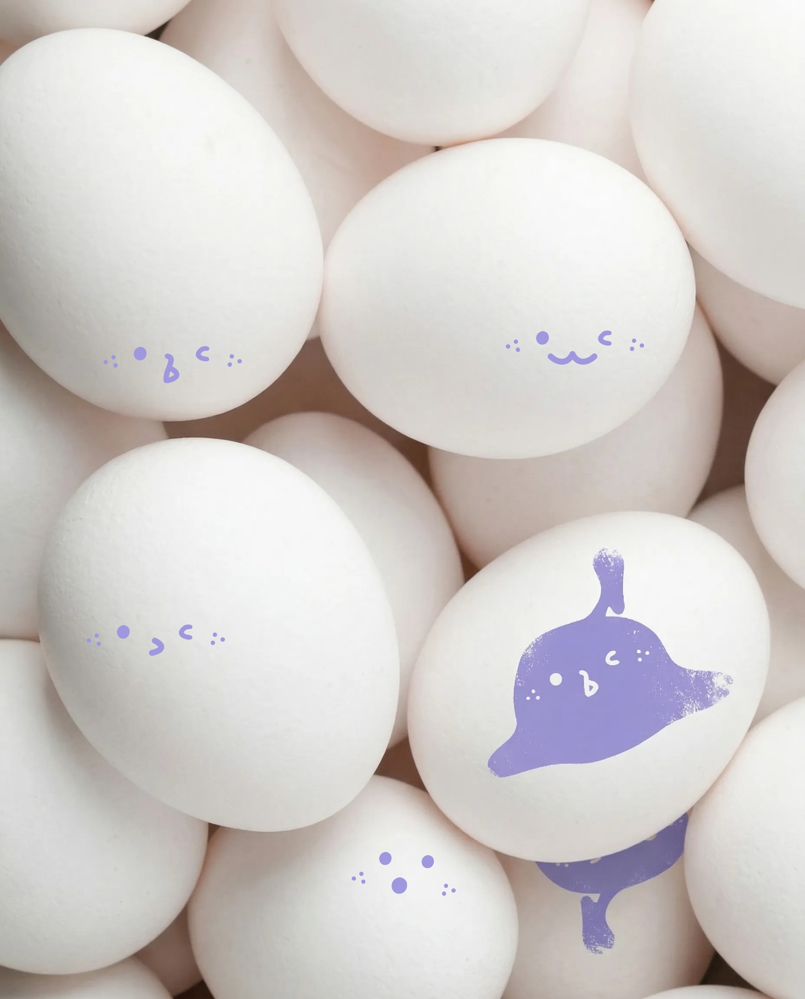
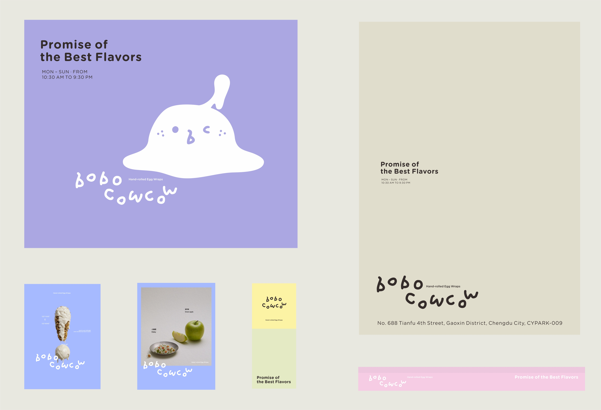
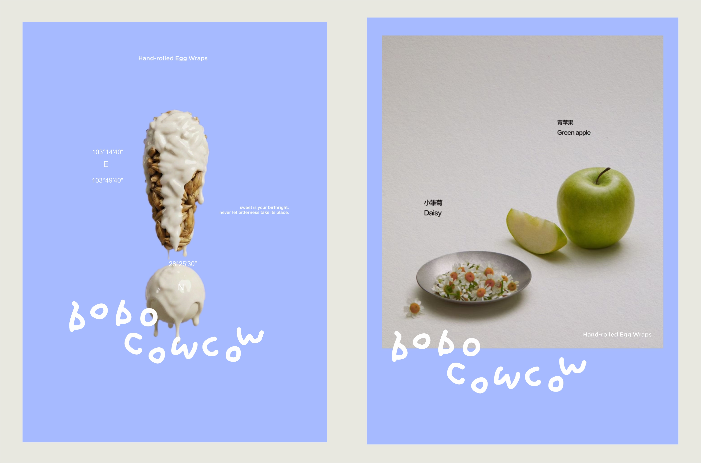
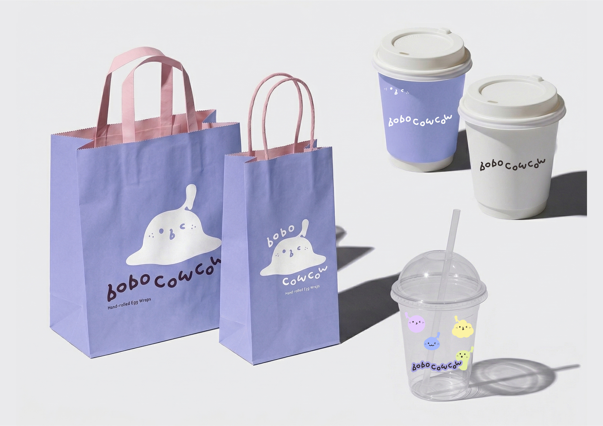
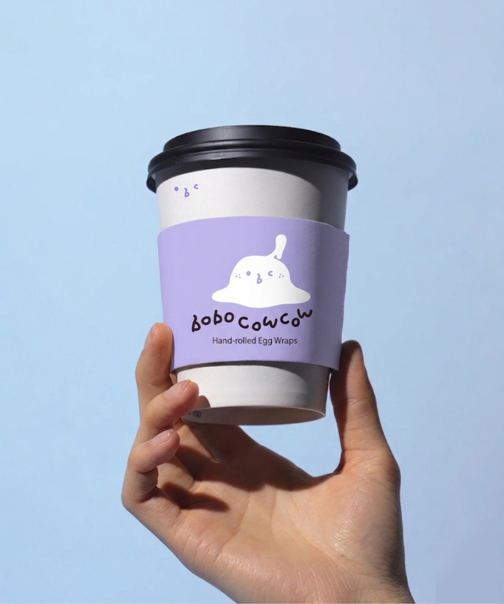
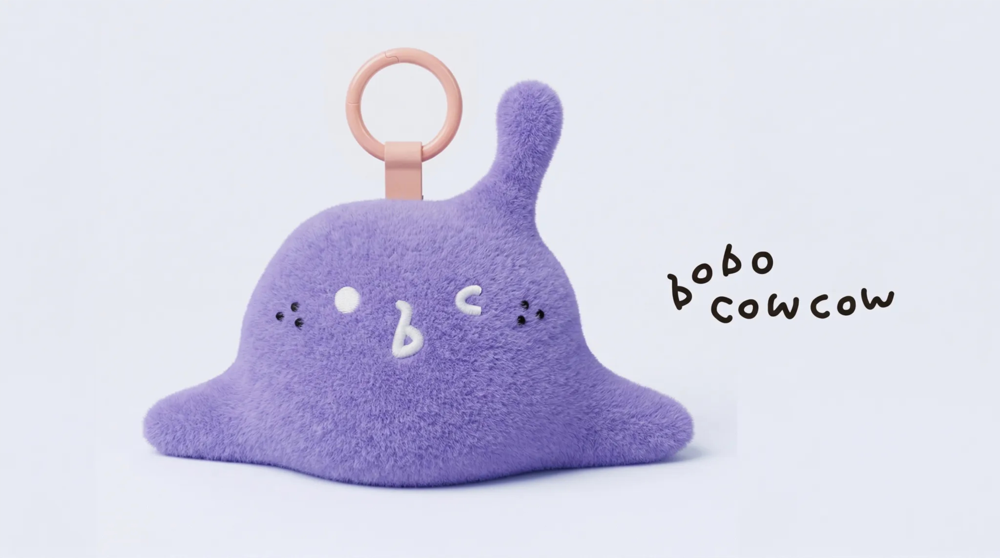
"Crafting a visual narrative that speaks directly to the heart of the modern consumer."
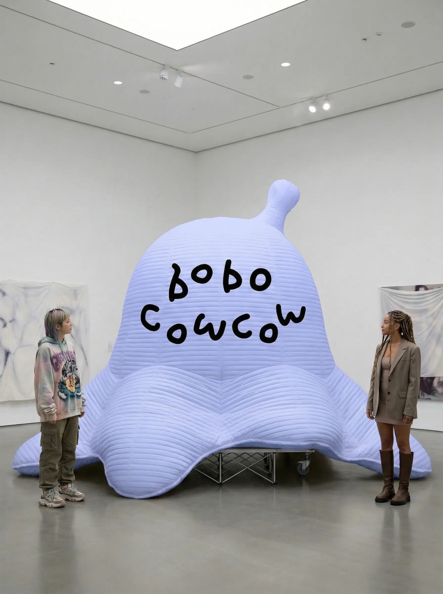
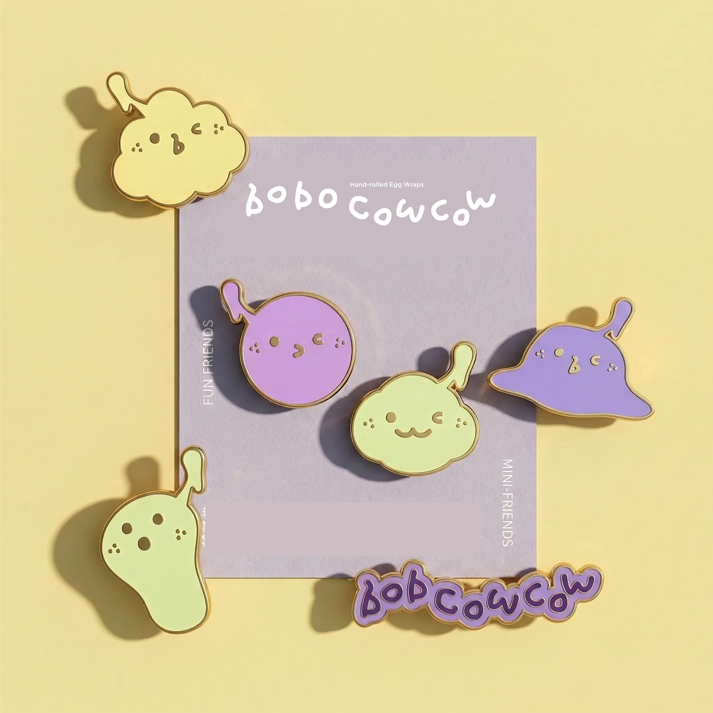
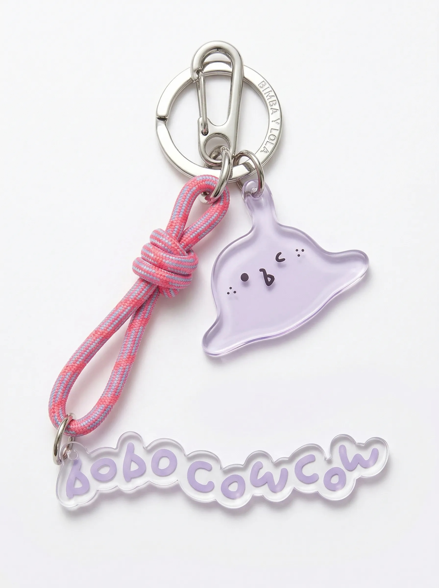
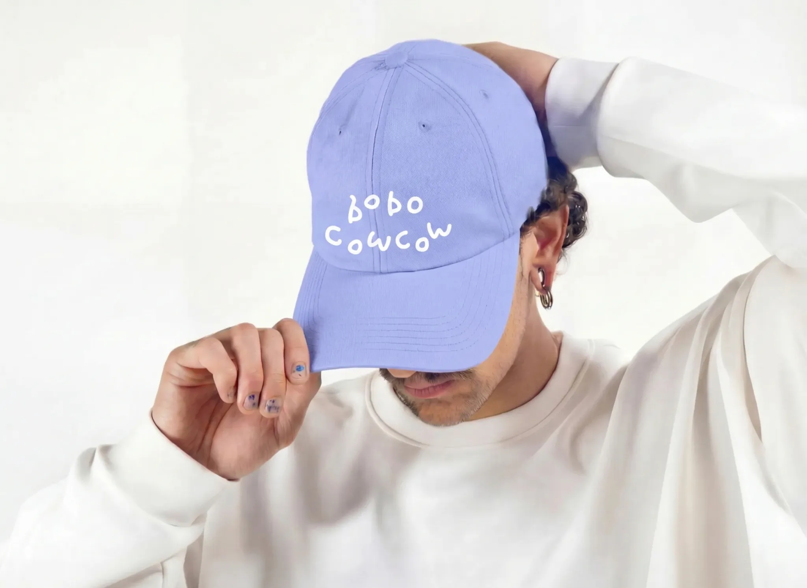
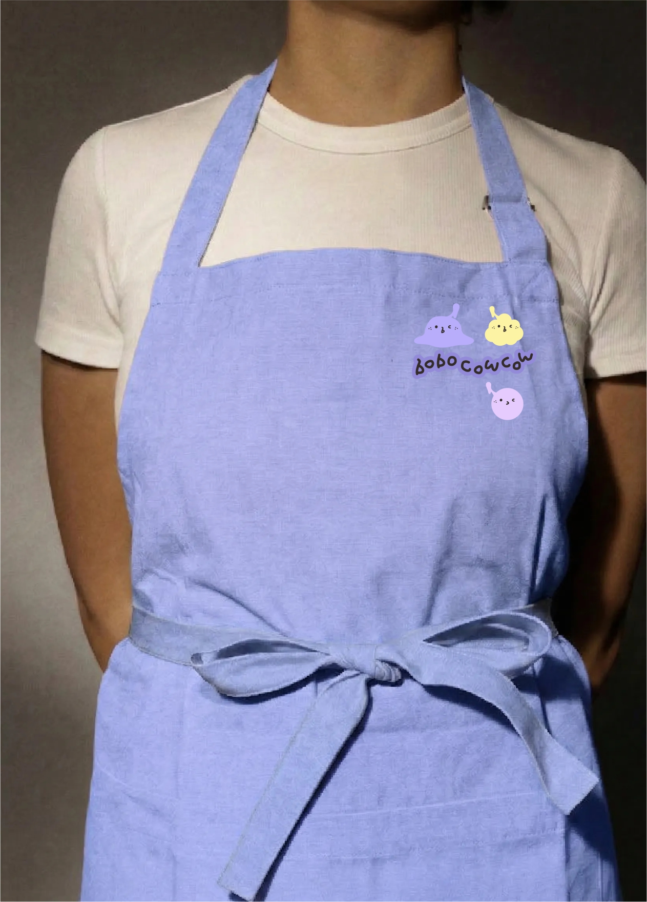
Next Project